2020/06/23
内部テストにご協力ありがとうございます。Apple の正式なツール（TestFlightツール）を使って、「飛んだログ帳」アプリのダウンロード、テスト実施、結果のフィードバックの手順を説明します。

注意）公開前のアプリのため、お持ちの iPhone/iPadに思わぬ不具合を発生させる可能性があります。テスト開始前に iPhone/iPadのバックアップを取られることをお勧めします。
対象機種）当アプリは、 iOS 13.2 以上で動きます。iPhone6S 以降 / iPad第五世代以降 /iPad Air2 以降が該当します。
説明画像) 説明資料はiPad版での画像を使います。iPhone版 は少しイメージが違うかもしれません。赤枠で囲ったところは、説明用に加工した部分です。
１）受け取ったURL をクリックすると TestFlightツール インストール画面が開きます。
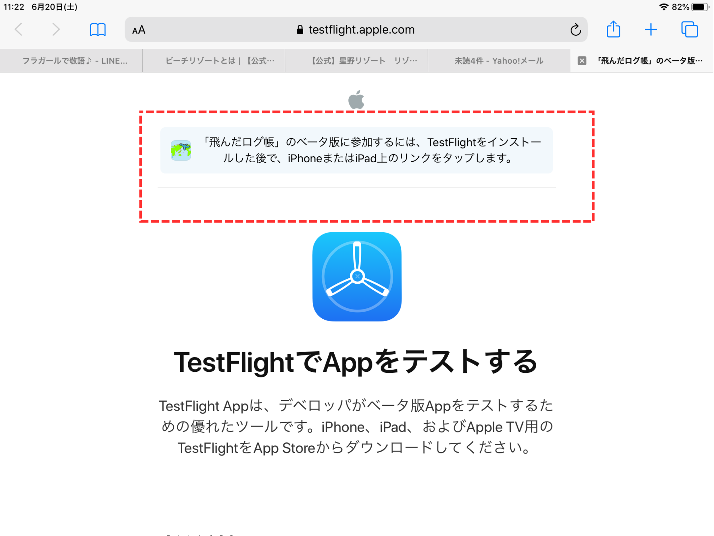
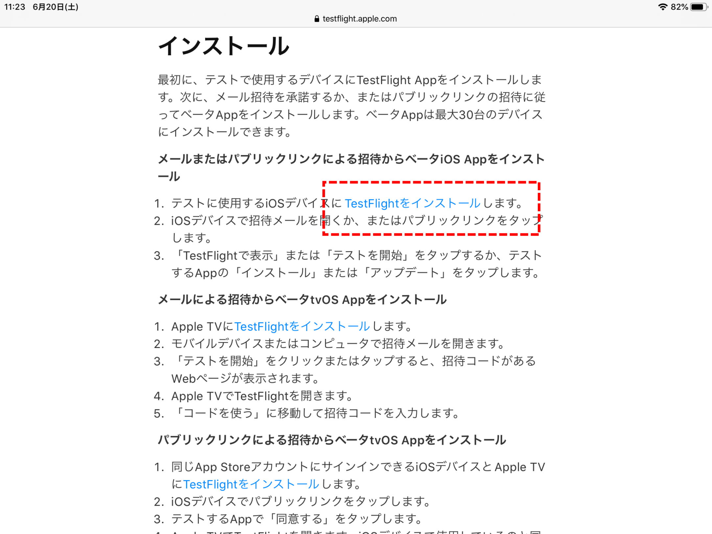２）TestFlightをインストール に進んでください。AppStore画面が開きます。
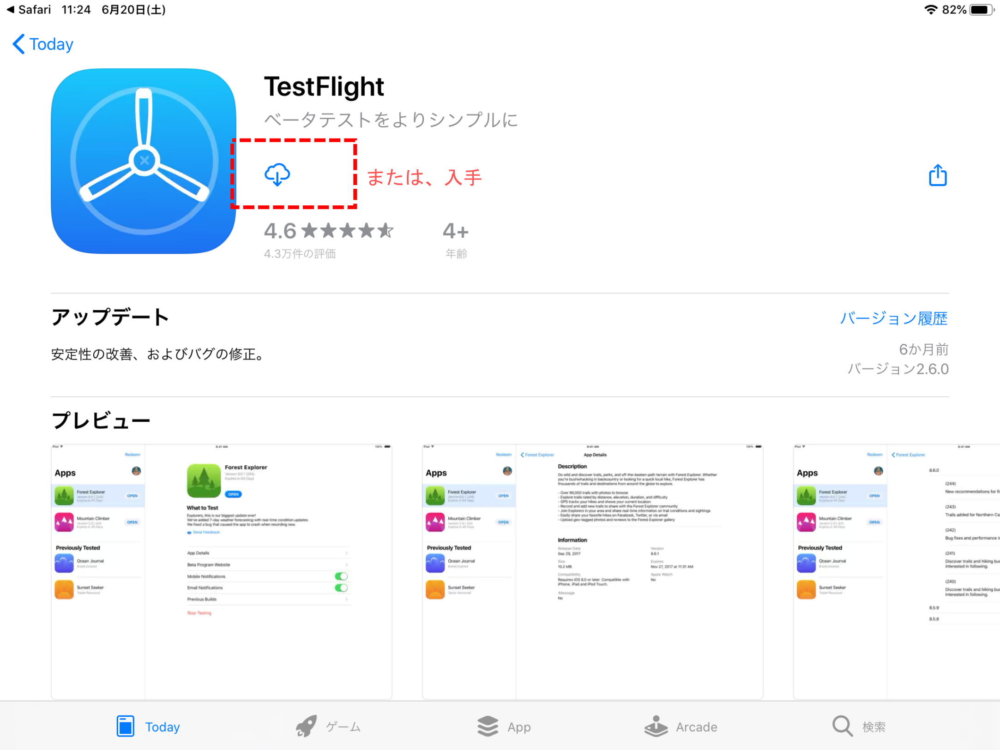３）入手 または ダウンロード に進んでください。Apple ID の入力を求められることがあります。ようこそTestFlightへ 画面が開きます。続ける -> 通知送信の許可 と進むと、「飛んだログ帳」インストール画面が開きます。
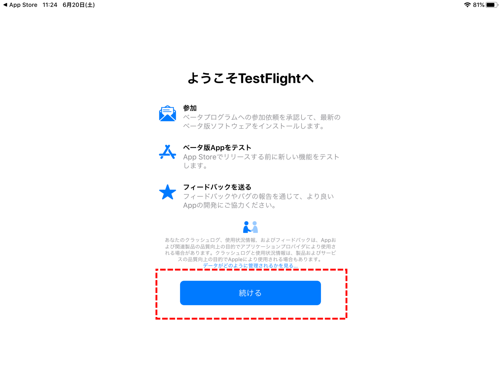
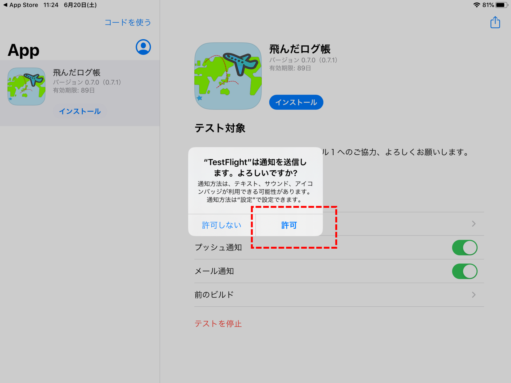
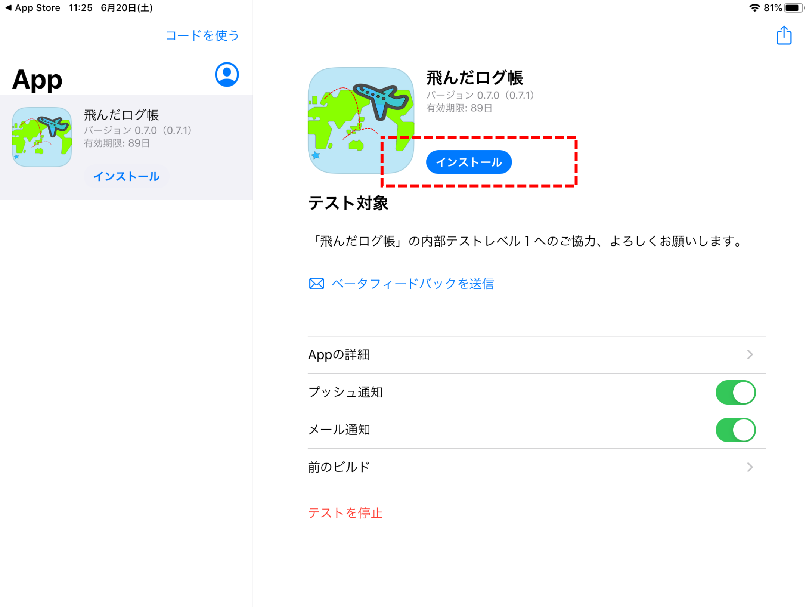４）インストールボタンを押して、アプリをインストールしてください。デベロッパーからの説明画面で テスト対象欄を読んでいただいて、 次へ -> フィードバックを共有の説明画面でテスト開始 を押すと、飛んだログ帳」アプリのトップ画面が開きます。
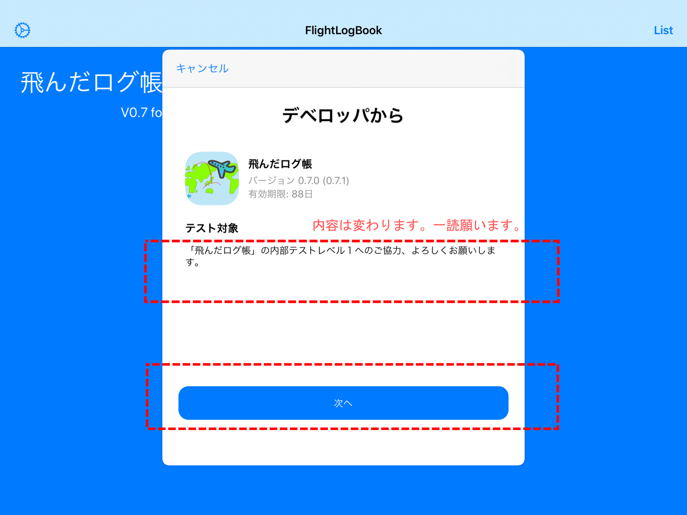
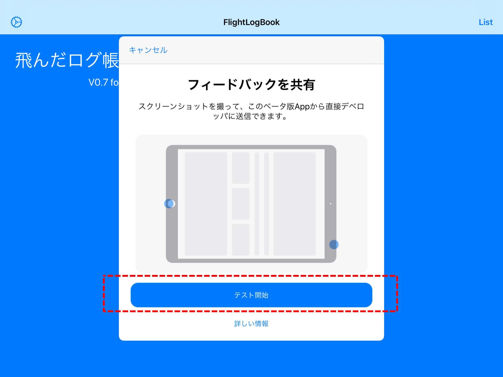
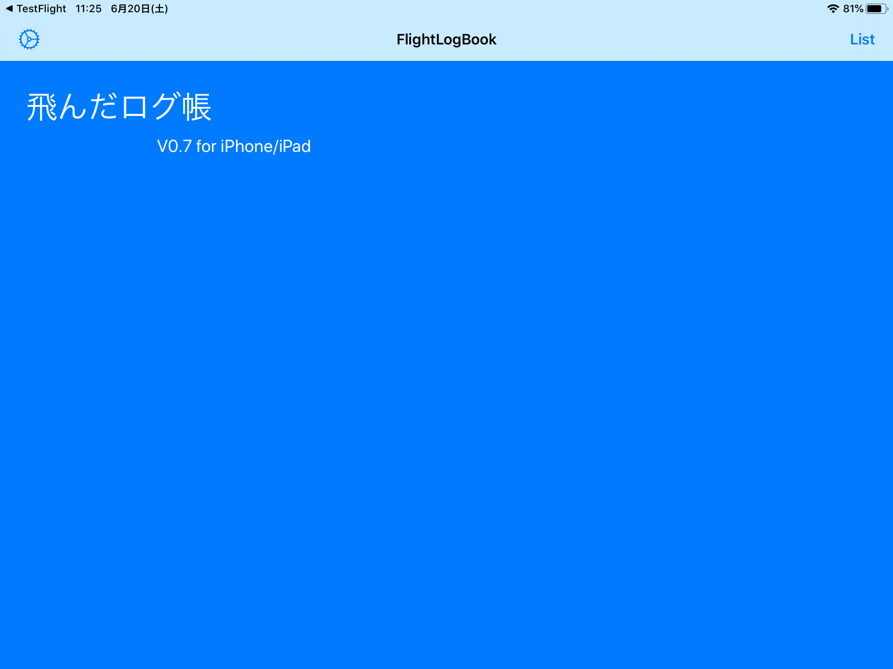５）少し殺風景ですが、これがアプリのトップ画面です。アプリのテストをお願いします。直感的に使ってみても構いませんが、詳しい使い方は、飛んだログ帳アプリの説明を参考にしてください。
開発者としてお聞きしたい観点は
- フライトログの登録、表示、世界地図へのプロットができているか？
- 写真貼り付け（設定画面、ログ登録画面）ができているか？
- どんな航空券のスキャンができるか？ ANAの国内/国際線は実績あり。
- 制約（ログ入力項目７つ、登録は最大10件、写真は一枚等）に満足できるか？
などが気になります。また、画面の見栄えについては素人感丸出しですが、「こうすると良い」というご意見・アドバイスを頂けるとうれしいです。
６）テスト結果は、TestFlightツールから 「ベータフィードバックを送信」をクリックして発見した問題や改善点を書いていただけると幸いです。画面のスクリーンショットを添付することもできます。
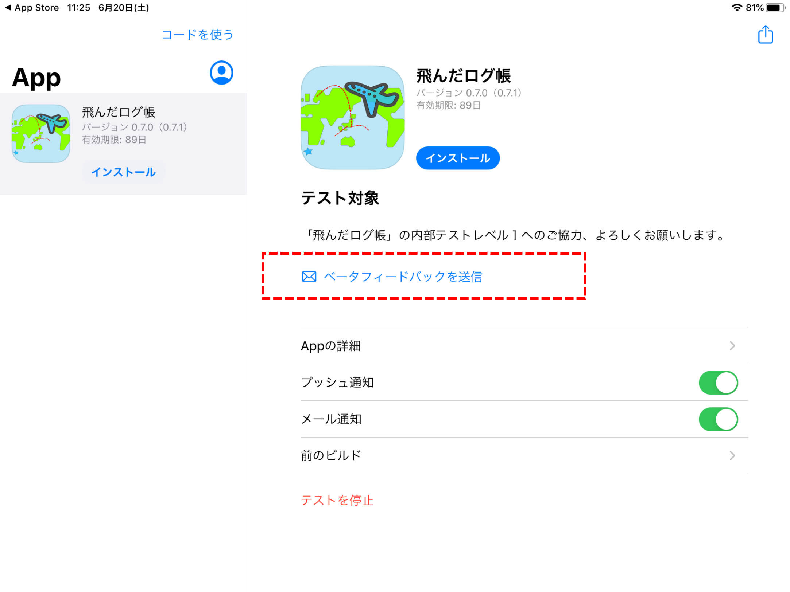
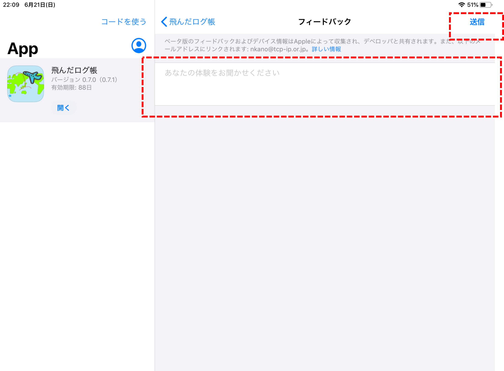ご協力に感謝します。よろしくお願いします。
作者：加納延康